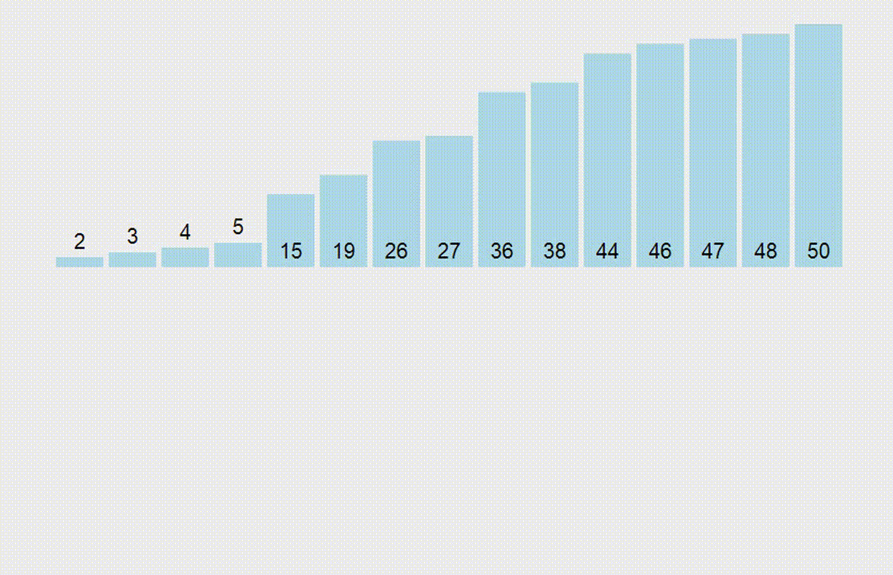

Алгоритмы
Сортировка выбором O(n2)
- function Sort(a) {
- let n = a.length
- for (let i=0; i<n-1; i++){
- let min = i
- for (let j=i+1; j<n; j++){
- if (a[j] < a[min]) min = j
- [a[i], a[min]] = [a[min], a[i]]
- }
- }
- return a
- }

Сортировка пузырьком O(n2)
- function bubbleSort(a) {
- let n = a.length;
- for (let i = 0; i < n - 1; i++) {
- for (j = 0; j < n - i; j++) {
- if (a[j] > a[j + 1]) {
- [a[j], a[j + 1]] = [a[j + 1], a[j]]
- }
- }
- }
- return a
- }

Сортировка вставками O(n2)
- function insertionSort(a) {
- let n = a.length
- for (let i = 0; i < n; i++) {
- let v = a[i],
- j = i - 1
- while (j >= 0 && a[j] > v) {
- a[j + 1] = a[j]
- j--;
- }
- a[j + 1] = v
- }
- return a;
- };

Быстрая сортировка O(n2)
- function quickSort(arr) {
- if (arr.length < 2) return arr;
- let pivot = arr[0];
- const left = [];
- const right = [];
-
- for (let i = 1; i < arr.length; i++) {
- if (pivot > arr[i]) {
- left.push(arr[i])
- } else {
- right.push(arr[i])
- }
- }
- return quickSort(left).concat(pivot, quickSort(right))
- }

Сортировка слиянием O(n2)
- function merge(left, right) {
- let arr = []
- while (left.length && right.length) {
- if (left[0] < right[0]) {
- arr.push(left.shift())
- } else {
- arr.push(right.shift())
- }
- }
- return [ ...arr, ...left, ...right ]
- }
-
- function mergeSort(array) {
- const half = array.length / 2
- if (array.length < 2){
- return array
- }
- const left = array.splice(0, half)
- return merge(mergeSort(left),mergeSort(array))
- }

Arrays
- ['h','o','l','a'] --> 'h,o,l,a'
-
- const f = a => a.join(',')
- [1, 2, 3, 4, 5, 6], 2 --> [2, 4, 6]
-
- const f = (a, b) => a.filter(n => n % b === 0)
- [1, 2, 3] [4, 5, 6] --> 21
-
- const f = (a, b) => [...a, ...b].reduce((a, b) => a + b)
- [1, 2, 1, 1, 3, 2] --> [1, 2, 3]
-
- const f = a => [...new Set(a)]
- f(7) --> "I love you"
-
- const f = a => ['not at all','I love you','a little','a lot','passionately','madly'][a%6]
- f([1,2,'a']) == '11'
-
- const f = a => a.filter(x => typeof x == 'number').reduce((x, y) => x + y, 0).toString(2)
- [1, -2, 3, -4, 5] --> [-1, 2, -3, 4, -5]
-
- const f = a => a.map(num => -num);